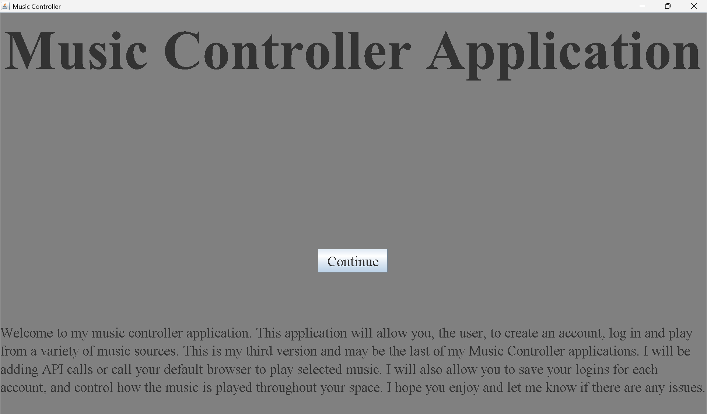
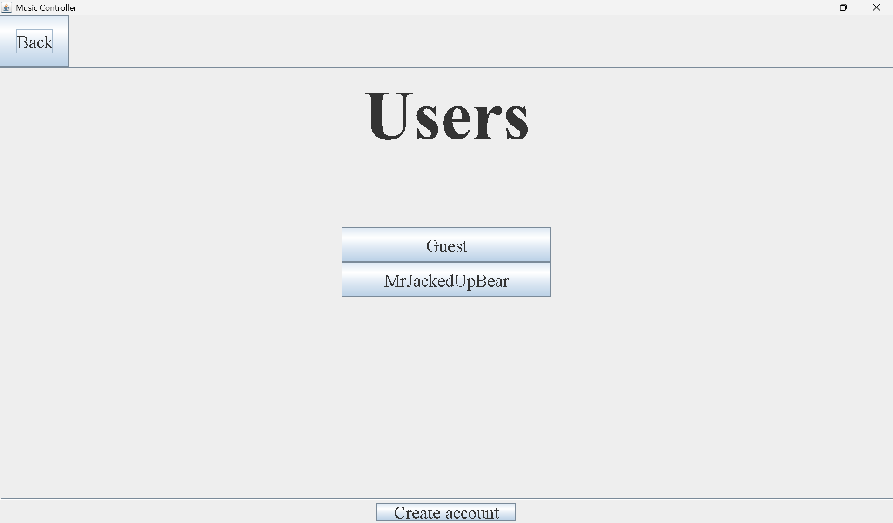
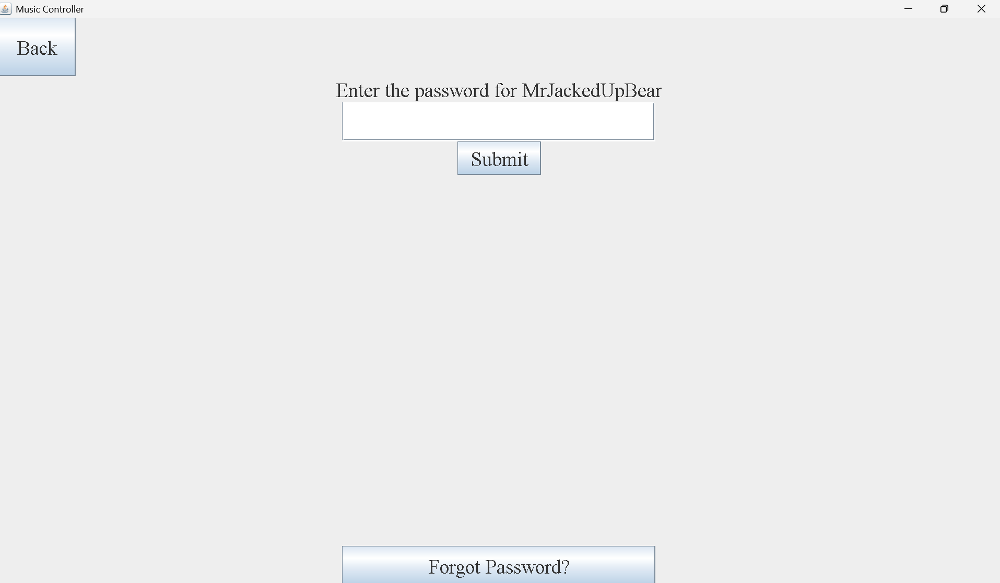
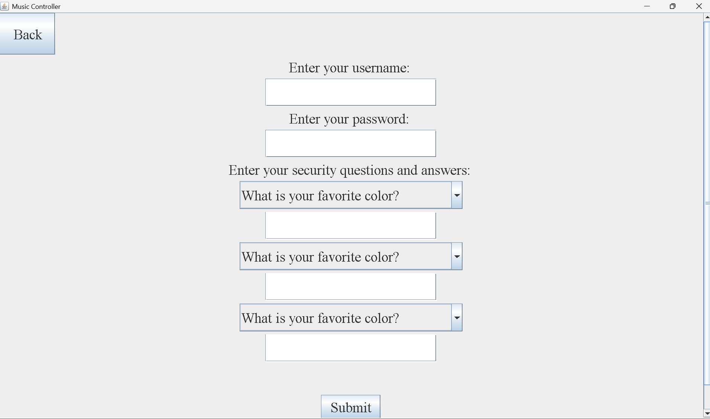
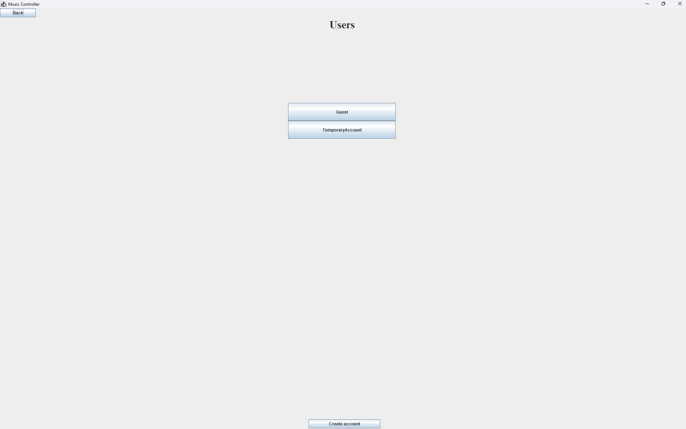
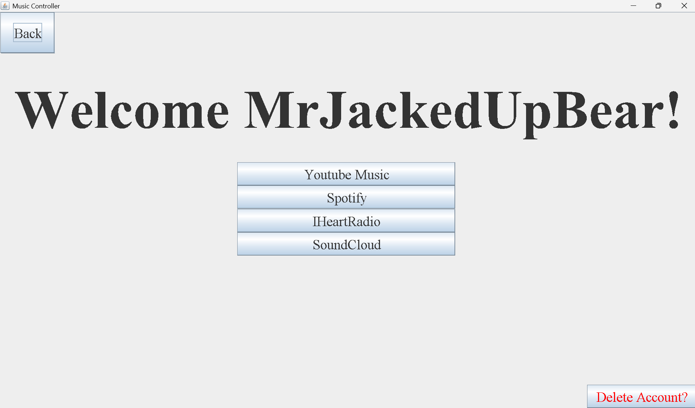

General Project Information
Hello and welcome to the Music Controller Main Page! The source code is at the bottom if that is why you're here. Otherwise, I will be describing the project
I have created, the purpose behind it, and the plans I have for this software.
- This project's main fuction is to allow multiple users to log in
to their music accounts to play music. The ideal setup for this software is to set it up in a general area with a speaker system, so that the users can go log
in to their account and play music. The user is allowed to create an account, log in to their account, and play music from a music application of their choice.
There is a system in place that allows the user to save their credentials to a text file, so that they can log in with their credentials later on. The passwords
are encrypted. The main login page for the user also hashes the password, so that I am not storing plaintext passwords.
-
This project was mainly created for personal use, so that I could have a whole music system set up in my house that allows new people to log in and play music,
without having to worry about logging in to their account each time.
-
Eventually, this project will feature a settings page to control where the music is played, the volume of the music, different queues for different users,
and many other features. I will also be working with an API to provide a more cohesive music experience for the users.
After completing the above, the main concept of the project will be complete, but I may make more tweaks later on.
Here are some screenshots of all the pages available in this application.
Music Controller Main Page
Music Controller Users Page
Music Controller Login Page
Music Controller Create Account Page
Music Controller Users Page After Account Creation
Music Controller Music Page
Source Code
Here is what you've all been waiting for. The source code. Here ya go.
Music Controller Github Page